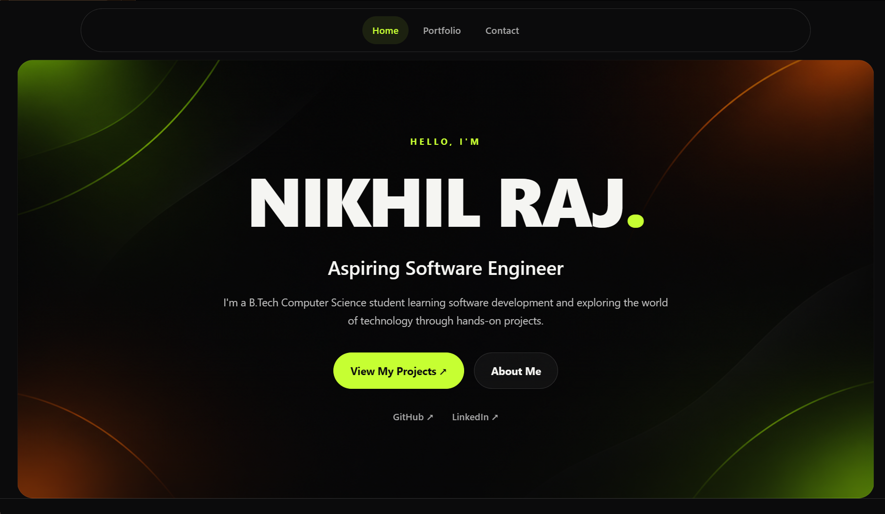
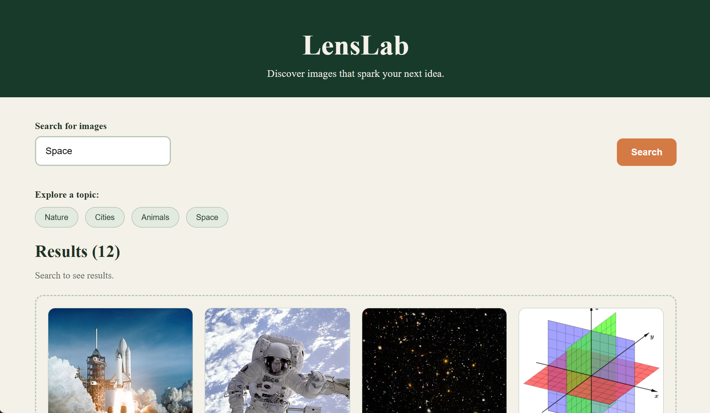
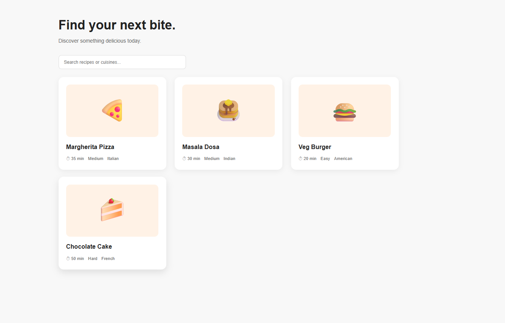

01
THE FOUNDATION
Building Fundamentals.
Developing a foundation in programming and web technologies.
- HTML and CSS
- Responsive Web Design
- Python Fundamentals
- JavaScript Basics
- Git and GitHub

WELCOME TO MY PORTFOLIO
B.Tech CSE Student | Aspiring Software Engineer
Learning, building and exploring technology one project at a time.
01 / INTRODUCTION
HELLO, WORLD! 👋
A Computer Science undergraduate with a growing passion for software development and technology.
I'm currently pursuing B.Tech in Computer Science and Engineering, strengthening my programming fundamentals and exploring web development through hands-on projects.
I enjoy understanding how applications work, experimenting with new technologies and turning ideas into functional digital products.
Learning by building. Growing with every project.
WHAT I'M INTO
Frontend Development
JavaScript & Programming
Modern Web Technologies
Artificial Intelligence
CURRENTLY
Exploring technologies, developing projects and continuously improving my problem-solving and development skills.
Always learning02 / THE PROCESS
Every project, every challenge and every new concept is another step towards becoming a better developer.
Developing a foundation in programming and web technologies.
Applying concepts through completed projects and practical development exercises.
Improving my development skills and becoming more independent at building applications.
03 / SELECTED WORK
A collection of projects built while learning, experimenting and turning ideas into functional digital experiences.

FEATURED PROJECTPROJECT 01 / PERSONAL BRAND
My personal developer portfolio, designed to showcase my projects, technical interests and learning journey through a clean, modern interface.

PROJECT 02 / WEB DEVELOPMENT
A web development project featuring an interactive interface, data fetching and rendering, and JavaScript array methods.

PROJECT 03 / RECIPE DISCOVERY
A recipe discovery application featuring live search, reusable recipe cards and dynamic recipe detail pages.

PROJECT 04 / PRODUCTIVITY
A simple and interactive task management application that allows users to add tasks, mark them as completed and delete them.
04 / WHAT'S NEXT
Beyond my current projects, I'm interested in developing a stronger understanding of:
05 / MY TOOLKIT
The technologies I work with, the tools I use, and the frameworks I'm currently exploring.
Building structured, responsive web interfaces.
Developing logic and interactive functionality.
Tools that support my development workflow.
Technologies I'm actively learning and experimenting with.
Always learning. Always building. These skills represent my current journey, not expert-level proficiency.
06 / GET IN TOUCH
HAVE A PROJECT IN MIND?
I'm always interested in connecting with people, discussing technology, exploring ideas and learning through new opportunities.
Let's Talk ↗